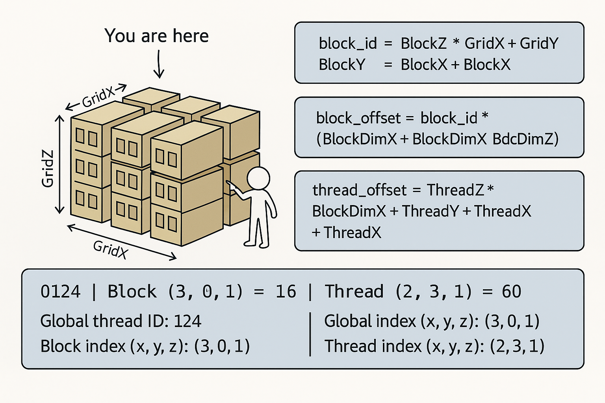
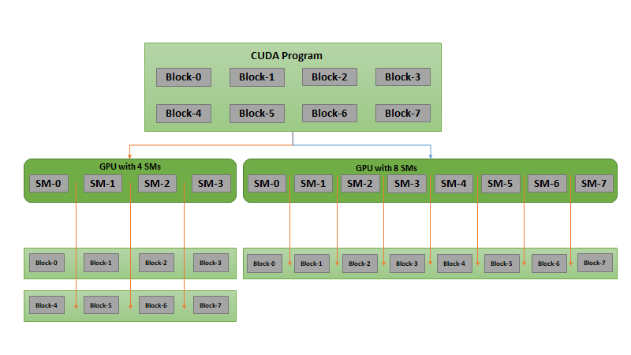
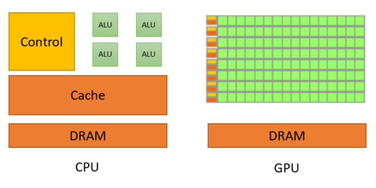
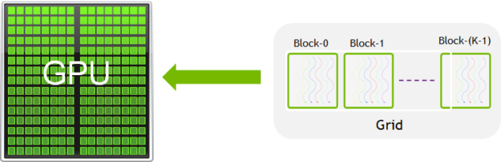
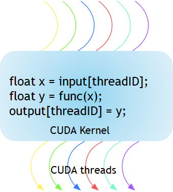
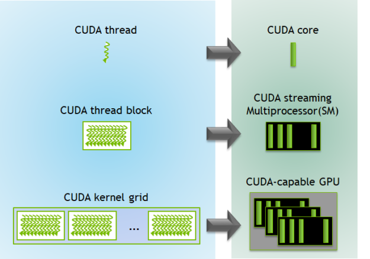

C and C++ foundations
88 curated items
An essential guide to C++ pointers, from the basics to advanced applications.
⭐ 01 — Multi-Level Pointers (int***)
Also known as "pointers to pointers," these variables store the address of another pointer.
🔗 Analogy: A Treasure Hunt
Imagine your data is a treasure (value). A multi-level pointer is like a series of clues, where each clue leads to the next until you find the treasure.
Supporting material in C and C++ foundations82 items
Showing 24 supporting items. Browse the complete repository for the remaining 58 files.
CUDA kernels
14 curated items · 1 result figure
CUDA (Compute Unified Device Architecture) is NVIDIA’s parallel computing platform that allows you to run C/C++ code directly on the GPU (Graphics Processing Unit) instead of the CPU.
This unlocks massive parallelism — the ability to execute thousands of operations simultaneously, making it ideal for deep learning, scientific computing, image processing, and high-performance computing (HPC).
🖥️ CPU (Host) vs GPU (Device)
Data must be explicitly transferred between the CPU and GPU — they do not share memory automatically.
🔁 The CUDA Runtime Flow

Supporting material in CUDA kernels8 items
JAX experiments
5 curated items
This directory contains resources, tutorials, and notebooks for learning and experimenting with JAX, a high-performance numerical computing library from Google. JAX enables accelerated computation using the power of GPUs and TPUs, and provides a NumPy-like API with automatic differentiation, vectorization, and just-in-time compilation.
What is JAX?
JAX is a Python library designed for high-performance machine learning research and scientific computing. It combines familiar NumPy syntax with powerful features such as:
- Automatic differentiation (autograd) - Just-in-time (JIT) compilation to XLA for speed - Vectorization via vmap - Seamless GPU/TPU acceleration
JAX is widely used in research and production for deep learning, optimization, and scientific simulations.
GPU problem solving
8 curated items
This directory contains solutions to GPU programming challenges from LeetGPU.com.
Overview
LeetGPU.com provides a set of challenges designed to test and improve your skills in GPU programming. Each challenge typically includes: - Problem descriptions - Reference implementations - Test cases - Starter templates for multiple GPU programming frameworks
Purpose
This folder will be used to store and organize my solutions to the LeetGPU challenge set. Contributions and bug reports are welcome.
Supporting material in GPU problem solving2 items
PyTorch experiments
733 curated items · 902 result figures
This directory contains a curated set of PyTorch notebooks and scripts, primarily based on the "Learn PyTorch for Deep Learning: Zero to Mastery" curriculum. These resources cover fundamental and advanced topics in deep learning using PyTorch.
About PyTorch
PyTorch is an open-source machine learning library developed by Facebook's AI Research lab. It is widely used for deep learning research and production, offering a flexible and intuitive interface for building neural networks and performing tensor computations on CPUs and GPUs.
Installation
It is recommended to use a virtual environment for Python projects.
Supporting material in PyTorch experiments727 items
Showing 24 supporting items. Browse the complete repository for the remaining 703 files.
Visual references
6 result figures




